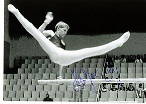

Holger Zeig (GDR)
1985 World Team Bronze Medalist

Medal Total
World Championships: 1 Bronze
Competition Results
1980
Jr. European Championships: 9th AA
Police Spartakiade: 5th AA, 5th FX, 5th PH, 6th R
1982
Bordeaux International: 6th AA
International Hungarian Championships: 16th AA
Jr. European Championships: 10th AA, 2nd V, 5th R, 6th PH
Tournament of Tomorrow: 2nd AA
1983
FRA-GDR Dual Meet: 1st Team, 3rd AA
GDR Championships: 6th AA
GDR-NOR Dual Meet: 1st Team, 5th AA
World Championships: 5th Team
1984
GDR City Meet: 5th AA
Moscow News International: 5th AA, 3rd PH
1985
Blume Memorial: 4th AA
Dinamo Championships: 2nd AA
GDR Championships: 6th AA
Golden Sands International: 10th AA
World Championships: 3rd Team
This page was created on September
12, 2004.
© Gymn Forum